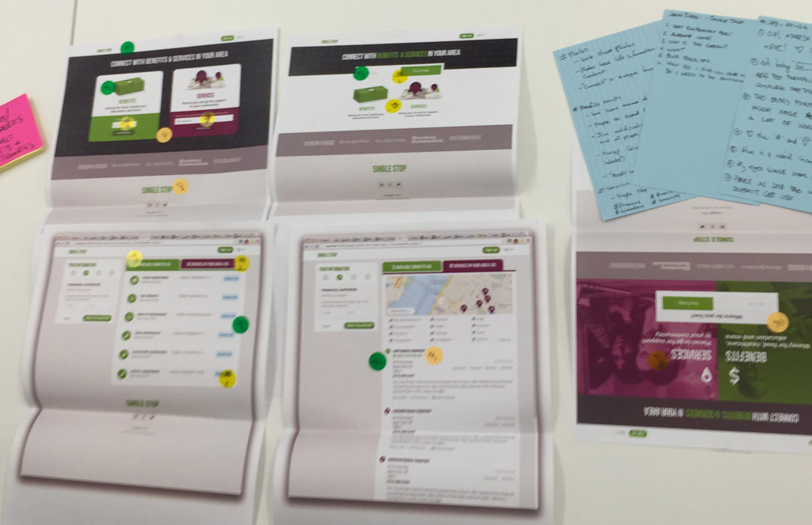

Your browser doesn't support the features required by impress.js, so you are presented with a simplified version of this presentation.
For the best experience please use the latest Chrome, Safari or Firefox browser.
The Pivotal Labs Design Toolbox:
Design Crit
Jaclyn Perrone, Winter 2014
What is Design Crit?
- time set aside weekly for designers to present and collect feedback
- designers pair less than devs, so its important to have collab time
- collaborative setting where it's clear everyone has a design voice
How does it work?
- weekly email: "Who wants to present?"
- Two 30m slots
- I also include a gif of Gob Bluth.
Set-up
- proctor leads the session
- State the project, problem, type of feedback sought
- review flows on-screen
- pin up print-outs of mocks
During Critique
- focus on problems, not solutions
- place dots on areas of the mock they would like to talk about; heatmap!
- capture additional notes on notecard
- proctor leads discussion
After Critique
- photograph everything in-place
- Designer keeps dotted mocks & corresponding notecards
- incorporates into normal project workflow

- decide bw different approaches to a problem
- rethink layout / information architecture
- the Calvary arrives! validation of professional design opinion to lay-opinion of client ("Oh, it's not just you")
- help choose testing topics for Think-Aloud Thursday
- content testing / validation
- change mocks
Why do we Crit?
Goals
For the Project
- reduce friction to getting feedback (keeps the project healthy)
- fresh eyes
- Even the act of describing a project can give one great clarity
Goals
For the Designer
- get help (5 pairs of eyes)
- practice receiving feedback is good for minimizing ego
Goals
For Pivotal Labs Design Team
- Exposure to other projects
- practice giving feedback
Goals
For the Client
- reassurance that many experts would come to similar conclusions
- design hive-mind; access to talents outside allocated designer
- talking points for stakeholder
- validation for stakeholders
Who
- designers at Labs!
- PMs, anchors, other team members
- Sometimes (prospective) clients as well!
- Vanessa and James and the IDT Team
- Andreea + a designer from Quandora
- Lissa, a designer from XO
- You!
When/Where
1:30pm-2:30pm
B.Altman
every Wednesday
Do you have a project that needs some critiquing?
Thanks! :-)
Want to come to crit?
Email me! jperrone@pivotal.io